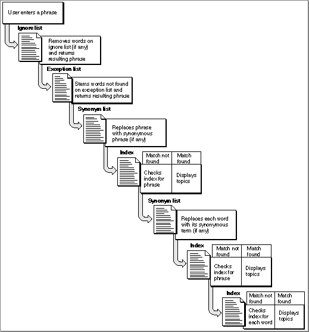
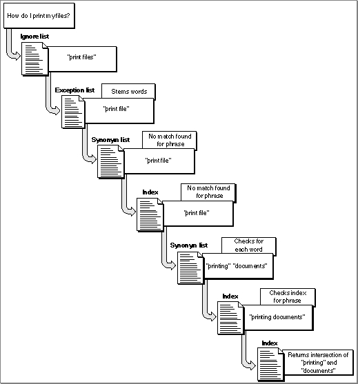

Helping the User Search
The Look For feature provides a powerful search facility that, in combination with information you provide, allows the user to enter one or more words--even a complete sentence--and obtain a list of topics related to a given search phrase. For example, when a guide file contains an index and Look For content, the user can give Apple Guide a phrase such as "print", "printing documents", or "How do I print my documents", and receive a list of topics related to that task.With Look For features selected in the Full Access window, the user can enter a search phrase in a search phrase entry box located in the left column of the window. After receiving the search phrase, Apple Guide searches the guide file index for one or more matching entries. (The guide file index contains entries that point to each guide file topic and is the same one you must create to appear in the left column of the Full Access screen when the user selects Index features.) If found, Apple Guide displays the associated topics in the right column of the window.
Apple Guide automatically reduces common word variations in search phrases to their root words. For example, Apple Guide reduces the word "copying" to "copy". This process is known as stemming. To further enhance the effectiveness of the Look For feature, you should provide Apple Guide with three lists: ignore, exception, and synonym. With these lists, you can control whether Apple Guide stems certain user search phrases and ensure that Apple Guide finds matches for search phrases containing terms not found in the index.
You need to create your guide file index in a way that best accommodates the use of these lists. In addition, you can also create invisible index terms. Apple Guide uses these terms to match search phrases with topics that do not appear in Apple Guide's visible index.
- The ignore list contains words that Apple Guide should remove if they appear in the user search phrase. For example, you can tell Apple Guide to remove from the search phrase the words "How", "do", and "I", which appear in the topic headings recommended by Apple.
- The exception list contains words that you do not want stemmed and words whose stemmed version matches another index term.
- The synonym list contains words that have identical meaning to index terms but that do not appear in the index. For example, you can make the word "clone" a synonym for the index term "copying".
If you do not create your index properly or create the associated lists, your users are likely to encounter significantly more failed searches.
How Apple Guide Stems
Apple Guide stems the user's search phrases by removing suffixes from words. These suffixes include "ion", "al", "s", "ies", "ing", "ed", "ize", and double occurrences of the same letter, for example, "ll". In some cases, Apple Guide automatically adds an "e" to the end of the stemmed word. For example, Apple Guide stems "filing" by removing the "ing" but then adds an "e" to the result ("fil") to create the word "file".Apple Guide also automatically stems punctuation for the user's search phrase. For example, "random-access memory" becomes "random access memory".
Table 3-1 shows some words that Apple Guide stemmed. You can also use Guide Maker's Test Look For utility to see how Apple Guide stems words and parses phrases.
- IMPORTANT
- Apple Guide uses the stemming methods described here only for guide files that specify the command <WorldScript> 0,0. By default, Apple Guide does not perform stemming for non-Roman and non-U.S. scripts. For additional information on localization, see "Designing for Localization" beginning on page 2-88.

How Apple Guide Matches Search Phrases With Topics
After Apple Guide receives a search phrase from the user, it tries to find a match by looking in the index and in the associated ignore, exception, and synonym lists. Figure 3-4 shows the actions Apple Guide typically performs after receiving a search phrase.Figure 3-4 An Apple Guide search in response to a search phrase

Notice that Apple Guide first checks the ignore list and removes designated ignore words, if any, from the search phrase. Next, Apple Guide checks the exception list to see which words it should not stem in the resulting phrase. Apple Guide then stems other words in the phrase, if appropriate.
Now Apple Guide searches the synonym list for the phrase. If it finds a synonym, it replaces the phrase with the equivalent phrase and searches the index for a match. If Apple Guide finds a match for the entire phrase, it displays the associated topics; otherwise, it searches the synonym list for each word in the phrase and replaces each one with its index term equivalent. It then searches the index for the phrase and, if found, displays topics. If not found, it creates a list of topics for each word in the phrase, and displays the intersection of these lists.
If Apple Guide cannot find a match for one word in a multiple word search phrase, the entire search fails, and it displays a message telling the user to try again. Apple Guide's success matching multiple word search phrases depends on how effectively you use the synonym list.
For example, suppose that you have provided Apple Guide with these ignore and synonym words:
Ignore words Synonym words how print = printing do file = documents I my Now suppose that the user enters the search phrase "How do I print my files?" Figure 3-5 shows how Apple Guide searches for topics to match this phrase.
Figure 3-5 A typical Look For search

For this example, Apple Guide performs the following steps:
The rest of this section gives you guidelines for creating an index and the three associated lists. Apple strongly recommends that you also use the Look For feature in Guide Maker to test and develop your Look For content. For more information, see Chapter 6 in Part 2.
- Apple Guide removes from the search phrase the four words specified in the ignore list ("how", "do", "I", and "my"). The resulting phrase is "print files".
- Apple Guide checks the exception list to verify which words in the phrase "print files" it should not stem. The phrase contains no exception words.
- Apple Guide stems the word "files" to "file". The resulting phrase is "print file".
- Apple Guide searches the synonym list for the entire phrase "print file" and finds no synonyms. The phrase remains "print file".
- Apple Guide searches the index for the phrase "print file".
- Apple Guide searches the synonym list to match each word in the phrase. As a result, it replaces the word "print" with "printing", and replaces the word "file" with "documents".
- Apple Guide searches the index for a match for the entire phrase, "printing documents", but doesn't find it.
- Apple Guide searches the index for each word in the phrase "printing documents" (that is, "printing" and "documents") and finds matching index terms.
- Apple Guide displays the intersection of these topics.
Creating a Guide File Index and Associated Lists
Your guide file index completes two features of the Full Access screen; it appears in the left column of the screen when Index features are selected, and Apple Guide uses it to associate user search phrases with topics when Look For features are selected. When you create a guide file index, you need to consider both these uses. For the Index feature, you should create index terms that correspond appropriately to your guide file content. For the Look For feature, you should determine the effects of Apple guide stemming and the interaction of the three associated lists--ignore, exception, and synonym--on the index terms. If you do not understand all these components, you will get unexpected or erroneous results.The rest of this section provides guidelines for creating a guide file index, including the use of invisible index terms. It then describes each of the associated lists.
Creating a Guide File Index
To retrieve topics for the user when Look For or Index features are selected in the Full Access screen, Apple Guide uses a guide file index. A guide file index is a list of terms you create that point to the topics appearing in the right column of the Full Access window.If you have created an index for reference documentation, you are probably familiar with common indexing conventions.You generally create an index entry for all nouns or noun phrases that name a topic, and use conjunctions and prepositions only to clarify the relationship between a main entry and subentry. For example, to create an index entry for the section "Files and Folders", you ignore the word "and" and create a separate index entry for the words "files" and "folders". Your index typically includes entries for incorrect terms with a reference to the correct index term. For example, an index can include an entry that says "site dictionary, see dictionary."
In contrast, your guide file index consists of only main index terms and no subentries, a practice that virtually eliminates the use of conjunctions and prepositions. In addition, you generally create index terms only for words that actually appear in your topics. To accommodate user search phrases containing terms that do not appear in the index, you generally create synonyms. For more information, see "Creating a Synonym List" beginning on page 3-24.
You create guide file index terms using nouns, noun phrases, and verbs that name topics. In general, use the plural form of the noun, even if it does not appear in the topic name. For example, for the topic "How do I save a memo?", use the plural form "memos" for the index term. Similarly, use the form of the verb that ends with "ing", even if it does not appear in the topic name. For example, for the topics "How do I save my files?" and "How do I open a file?", use the forms "saving" and "opening" for index terms.
Table 3-2 shows some sample topics and their associated index terms.
As you create your index, you need to answer the following questions:
If the answer to any of these questions is yes, then create a synonym for the word. (You can also use the exception list or invisible index term.) For example, consider the index term "printing". Apple Guide stems this term to "print". The term "printing" has other forms, "print" and "prints", which Apple Guide also stems to "print". To match these words to the appropriate index term, you can specify that "print" is a synonym for "printing".
- Does Apple Guide stem the term?
- Does the term have other forms? If so, are the stemmed versions of these forms inappropriate?
- Does the term have a plural form?
- Is there an alternative word, spelling, abbreviation, or acronym for the term?
Alternative words or phrases that the user might enter for "printing" include "print command", "printer", and "spool". By specifying each of these words as synonyms for the index term "printing", you can allow the user greater flexibility in entering search phrases and increase Apple Guide's ability to provide a successful match.
For complete information, see "Creating a Synonym List" beginning on page 3-24, as well as the next section.
Invisible Index Terms
When users view the guide file index in the left column of the Full Access window with Index features selected, they should see only index terms that correspond to the terms used in the guide file topics. The terms in the left column are visible index terms. To accommodate Look For search phrases that do not correspond to actual index terms, use invisible index terms. Although an invisible index term does not appear in the left column of the Full Index screen with Index selected, Apple Guide uses the term to match a search phrase with guide file topics.You should use invisible index terms to have Apple Guide provide results that it cannot derive from the synonym list or through normal intersections of topics. For example, you should create an invisible index term to have Apple Guide
- Accommodate search phrases that the user is likely to enter but that have no corresponding index term or appropriate synonyms. For example, if the word "customizing" is not synonymous with any index terms and Apple Guide cannot retrieve any of its associated topics through an intersection of other words, make it an invisible index term.
- Provide logical topic groupings that Apple Guide cannot derive from intersections. For example, suppose you specify "bitmap font" as a synonym for "fonts" and "bitmap graphic" as a synonym for "graphics", and the index terms have no topics in common. In this case, you can create an invisible index term for "bitmap" that includes relevant topics from the index terms "fonts" and "graphics".
- Provide topics if the user enters a search phrase that describes topics by class rather than by their specific names. For example, if the user enters the search word "tips", you would provide all tip sequences in the guide file.
Creating an Ignore List
You should place in the ignore list words that you want Apple Guide to remove if they appear in the user search phrase. In general, these words should be ones that the user is likely to enter as a search phrase but that are inappropriate as index terms and do not warrant synonyms. The list should generally include
- all words from the phrases in your topic headings (for example, "how", "do", and "I")
- other words commonly used in search phrases
- contractions ("didn't", "doesn't", "don't")
- prepositions ("of", "with", "in", "on", "without", "during", "except", "for", "from")
- adverbs ("especially", "exactly", "frequently", "forward")
- articles ("a", "an", "the")
- adjectives ("each", "entire", "few", "fewer", "first")
- conjunctions ("and", "but", "than")
- pronouns ("everything", "each", "my", "that", "those", "their", "these", "your", "its")
For example, Table 3-3 shows the ignore words for some sample guide file topics.
- Note
- Apple Guide automatically ignores numerals.
Creating an Exception List
In the exception list, you should place only words that you do not want stemmed and for which the stemmed version matches another index term. For example, assume that you specify "custom" as a visible index term and "customizing" as an invisible index term, with different topics associated with each index term. To prevent Apple Guide from stemming "customizing" to "custom", you should place "customizing" on the exception list.You should use the exception list for no other reason. To handle unwanted effects of stemming, you generally should use the synonym list (described next). By default, Apple Guide does not use the exception list for non-Roman and non-U.S. script systems.
Creating a Synonym List
In the synonym list, you should place words that have identical meaning to index terms but that do not appear in the index. You generally use the synonym list more than the exception list or invisible index terms. It provides the most efficient method for handling unwanted effects of stemming and incorrect usage in search phrases.You can create a synonym for regular and invisible index terms. You can also create a multiword synonym for an index term that is a compound phrase. When you do, however, the search obtains the expected result only if the user search phrase is the exact multiword synonym, with no other words.
You should use these guidelines to create a synonym:
Table 3-4 shows synonyms derived from sample topics.
- For an index term that Apple Guide stems, specify its stemmed version as a synonym to that index term. For example, Apple Guide stems the term "editing" for "edit". You therefore specify the word "edit" as a synonym to "editing". This convention applies to all plural forms of index terms, which Apple Guide stems to the root word. For example, Apple Guide stems the term "formats" to "format". You therefore specify "format" as a synonym for "formats". (Optionally, you can place a plural form of the index term on the exception list or create an invisible index term for the stemmed version.) Follow this convention even if the stemmed version of the index term is not an actual word. For example, Apple Guide stems the word "searching", to "searche". You should therefore specify "searche" as the synonym for "searching", even though it is an incorrect spelling.
- For an index term that has other forms that do not stem appropriately or match the term, specify these forms as synonyms for that index term. For example, the index term "retrieving" uses the forms "retrieve", "retrieves", and "retrieval". Apple Guide stems "retrieving" to "retreiv", "retrieval" to "retreiv", and "retrieves" to "retrieve", but it does not stem the word "retreive". To ensure that Apple Guide finds a match if the user enters any of these three forms as search phrase, specify "retriev" and "retrieve" as synonyms for "retrieving." In some cases, you need only one synonym to cover several forms. For example, Apple Guide stems both "printing" and "prints" to "print". You can therefore cover all forms of "printing" by specifying "print" as its synonym.
- For an index term that has the same meaning as other words not included in the index, specify the other words as synonyms to that index term. For example, a user might enter the search phrase "duplicate" instead of the index term "copying". Note that "duplicate" is itself stemmed to "duplic"; therefore specify "duplic" as a synonym for "copying".
- For an index term that has alternative wordings or spellings, specify these as synonyms for the correct term. For example, specify "catalogue" as a synonym for "catalog" and specify "tool bar" as a synonym for "toolbar". If Apple Guide does not appropriately stem the alternative word, specify a synonym for this stemmed version.
- For an index term that has an abbreviated version, make it a synonym for the index term. For example, specify "info" as a synonym for "information".
- For an index term that has a foreign word with the same meaning, make the foreign word a synonym.
- For an index term that has an acronym, specify the acronym as a synonym for the spelled out version. For example, specify "RAM" as a synonym for "random access memory".
- For an index word that has a slang word with the same meaning, make the slang word a synonym for the index term. For example, specify "crash" as a synonym for "system failure".